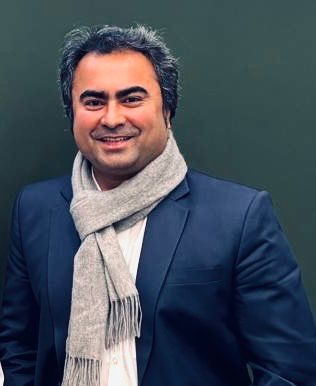
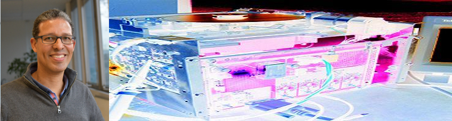
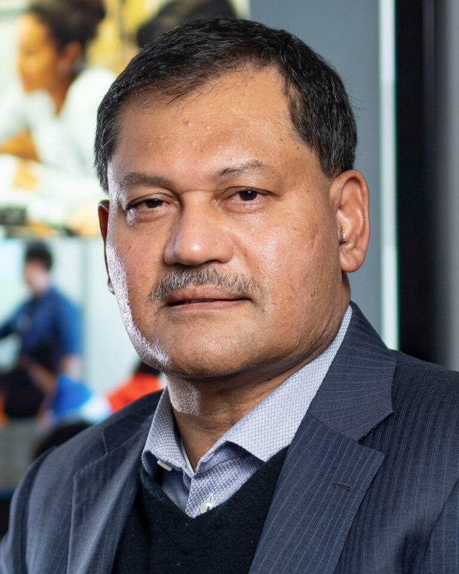

Pre-congress workshop · IFAC World Congress 2026
Prognostics, Health Aware Control Design and Safe Control Learning for Safety Critical Systems
A full-day workshop on health-aware control, prognostics-aware control, safe control design and learning, and RUL-oriented control for safety-critical systems.
The programme connects PHM, feedback control, and safe / continual learning through seven invited talks and a closing panel, with applications spanning electric aircraft propulsion, degrading mechatronic systems, batteries, reusable rocket engines, renewable energy systems, and lifelong control.
IFAC open invited track
Safe, Fault Resilient and Health-Aware Control Design and Learning
Researchers + practitioners
Open to IFAC attendees from academia, industry, and safety-critical engineering domains.
Aerospace to energy
Electric aircraft, batteries, mechatronics, reusable rocket engines, renewable energy, and cyber-physical systems.
PHM, HAC, safe RL
Fault-tolerant control, remaining useful life, control barrier functions, and continual learning.
Overview
Scientific rationale
Industrial and mission-critical systems increasingly operate in closed-loop settings under tight safety, availability, and efficiency constraints. Modern control frameworks therefore need to address faults, progressive degradation, and model uncertainty in addition to nominal stability and performance.
This workshop focuses on the intersection of safe control design, prognostics and health management, health-aware control, and learning-enabled decision making. Its central aim is to show how PHM outputs, remaining useful life estimates, and formal safety constraints can be embedded directly into feedback and learning-based controllers.
Across seven invited talks, the programme moves from hybrid modelling and fault detection to RUL-centric control, battery-aware mission planning, prognostics-aware control design, renewable-energy HAC, safe reinforcement learning, and continual reinforcement learning for lifelong control.
Main objectives
- Present a unified view of safe, fault-resilient, and health-aware control design.
- Disseminate recent advances in safe RL and continual RL for complex systems.
- Strengthen links across IFAC, PHM, and machine-learning communities.
- Identify open theoretical and practical challenges, including validation and certification.
Keywords
Safe Reinforcement LearningControl Barrier FunctionsFault-Tolerant ControlData-driven Fault DetectionHealth-aware ControlPrognostics-based Control
Scope
Workshop outline and technical scope
The day is structured around three connected themes: model-based and hybrid PHM, application-driven health-aware control, and safe / continual reinforcement learning for non-stationary control settings.
Model-based and hybrid PHM
Physics-based and deep-learning hybrid models for fault detection, health estimation, predictive maintenance, and RUL-aware control of degrading mechatronic systems.
Application-driven health-aware operation
Battery discharge prediction, health-aware mission planning, prognostics-aware rocket-engine control, and PHM-informed HAC for renewable-energy systems.
Safe and continual learning
Safe reinforcement learning with control-theoretic guarantees, safe exploration, input-to-state safety, and continual reinforcement learning for lifelong control.
Confirmed technical topics
Safe RL and safety-critical control design
Control barrier functions, reward shaping, safe exploration, and formal guarantees for nonlinear systems.
Continual and lifelong RL for control
Regularization, replay, and expansion methods for non-stationary environments without catastrophic forgetting.
Hybrid physics-informed PHM
H-PINNs and related hybrid models for health prediction in electric aircraft propulsion and other complex systems.
RUL-driven health-aware control
Observer and controller design that shape degradation rates and end-of-life trajectories.
Health-aware learning and mission planning
Battery ageing estimation, health-aware mission optimization, and operational parameter control.
Prognostics-aware control design
Set-point modulation and optimization strategies that explicitly trade off performance against long-term health.
Renewable-energy HAC
Integration of health and RUL estimates into control loops for reliability-sensitive energy assets.
Organizers
Workshop organizing team
The proposal names three organizers: Mayank Shekhar Jha, Chetan S. Kulkarni, and Olga Fink.

Main contact
Mayank Shekhar Jha
Université de Lorraine / CRAN, CNRS, Nancy, France
Associate Professor at Polytech Nancy and researcher at CRAN since 2018. His work spans safe reinforcement learning, deep-learning-based prognostics, and health-aware control for safety-critical systems. He is also an external collaborator and visiting researcher at NASA Ames Research Center.
mayank-shekhar.jha@univ-lorraine.fr
Organizer
Chetan S. Kulkarni
KBR, Inc. / NASA Ames Research Center, Mountain View, USA
Staff researcher with the Prognostics Center of Excellence and Diagnostics and Prognostics Group at NASA Ames. He develops physics-based, prognostic, and hybrid models for electronic, energy, and exploration ground systems, and works broadly in diagnostics and PHM.
chetan.s.kulkarni@nasa.gov
Organizer
Olga Fink
Laboratory of Intelligent Maintenance and Operations Systems, EPFL, Lausanne, Switzerland
Assistant Professor of Intelligent Maintenance and Operations Systems at EPFL. Her research bridges machine learning, failure and degradation prediction, reliability, and maintenance for complex engineering systems, building on both academic and industrial experience.
olga.fink@epfl.chInvited programme
Talks and abstracts
The workshop comprises seven invited 60-minute talks followed by a closing discussion. Abstracts below are adapted directly from the workshop proposal for public-facing presentation.
View abstract
Electric aircraft and urban air mobility systems require highly accurate health-management capabilities that can predict failures before they occur, support condition-based maintenance, and enable autonomous operational decisions.
This talk presents a hybrid prognostics framework that combines physics-based performance models with deep learning to capture both first-principles behaviour and data-driven degradation patterns. The approach is especially suited to electric aircraft propulsion systems, where adaptable and accurate health prediction is essential for safe and reliable operation.

View abstract
Remaining Useful Life (RUL) is central to PHM, but using RUL estimates inside decision and control loops remains challenging. This talk introduces a state-space HAC methodology aimed at governing the end-of-life trajectory of controlled mechatronic systems.
The presentation studies the relationship between operational dynamics and ageing, and shows how robust observer and controller designs can regulate degradation rates so that acceptable deterioration levels are achieved over a desired average lifetime.
View abstract
The talk introduces Dynaformer, a deep learning architecture that infers battery ageing state from partial voltage and current samples and predicts the full discharge curve, enabling controlled usage up to end-of-discharge.
Building on this, the talk addresses joint mission planning and health-aware real-time control. A deep RL algorithm is presented for prescribing operational parameters that extend discharge cycles while optimizing mission performance in simulated NASA multirotor aircraft scenarios.
View abstract
For safety-critical systems subject to degradation under closed-loop operation, state of health must be incorporated directly into control design. This talk presents a new control strategy that links health assessment, RUL prediction, and RUL extension.
The proposed formulation treats control design as an optimization problem and introduces a set-point modulation approach that adjusts present control inputs to improve future health while retaining acceptable performance. The method is illustrated on numerical examples and a reusable liquid-propellant rocket engine case.
View abstract
Most control approaches for renewable energy systems prioritize performance optimization without explicitly accounting for degradation. HAC changes this by integrating component health status and remaining useful life into the control system.
This talk surveys methodologies that combine HAC and PHM to optimize maintenance, predict failures, and extend the lifespan of critical components in renewable-energy applications and related reliability-sensitive sectors.
View abstract
The talk introduces reinforcement learning from a control perspective and motivates safe RL for both discrete-time and continuous-time systems with provable guarantees.
It then presents discrete-time safe RL methods that enforce safety through CBF-augmented rewards, followed by approaches to safe exploration based on input-to-state stability and input-to-state safety. Recent developments on input saturation, boundary-focused exploration, and model-free system dynamics learning are also discussed.

View abstract
Modern reinforcement learning is powerful, but often assumes stationary environments. This talk addresses the lifelong-control setting, where systems evolve because of changing environments, degradation, faults, and mission objectives.
The speakers formalize continual RL agents, distinguish continual RL from related paradigms such as multi-task RL and meta-RL, and review core method classes together with case studies, limitations, and open problems centered on safe adaptation.
Speaker profiles
Invited speaker details
The profiles below correspond to participants whose biographies were provided in the proposal and for whom images were supplied.
Speaker
John-Jairo Martinez-Molina
Grenoble INP (Ense3) / GIPSA-lab, France
Full Professor at Grenoble INP and researcher at GIPSA-lab. His interests include modelling and robust control of mechatronic systems, LPV systems, switching control, and fault-tolerant control, with applications to automotive and aerial vehicles, wind turbines, e-bikes, and anti-vibration systems.
Speaker
Didier Theilliol
Polytech Nancy / Université de Lorraine / CRAN, France
Professor at Polytech Nancy and Université de Lorraine within CRAN. His research focuses on health-aware control, data-based and model-based fault diagnosis, active fault-tolerant control, reliability analysis, distributed control systems, and multi-agent systems.
Speaker
Vicenç Puig
Universitat Politècnica de Catalunya (UPC) / IRI, Barcelona, Spain
Full Professor in the Automatic Control Department at UPC and researcher at the Institut de Robòtica i Informàtica Industrial. He is widely known for contributions to fault diagnosis and fault-tolerant control using interval, LPV, and set-based approaches, with major leadership roles in IFAC and IEEE communities.
Speaker
Gautam Biswas
Vanderbilt University / Institute for Software Integrated Systems, USA
Cornelius Vanderbilt Professor of Engineering and Professor of Computer Science and Computer Engineering. His research addresses intelligent systems for monitoring, control, fault adaptivity, deep reinforcement learning, anomaly detection, and online risk and safety analysis for complex cyber-physical systems.
Additional co-speakers listed in the proposal
Talk 7 is jointly listed under Austin Coursey, Marcos Quiñones-Grueiro, and Gautam Biswas, all from Vanderbilt University. The uploaded images provided portraits for Prof. Gautam Biswas; the remaining co-speakers are therefore named in the talk card and this note.
Tentative schedule
Full-day programme
The proposal specifies a full-day workshop from 09:00 to 17:15.
| Time | Session |
|---|---|
| 09:00-09:15 | Welcome and overview (organizers) |
| 09:15-10:15 | Talk 1: Model Based Approaches for Fault Detection, Prognostics, Decision Making (C. S. Kulkarni) |
| 10:15-11:15 | Talk 2: Health-Aware Control for Mechatronic Systems in Degradation (J.-J. Martinez-Molina) |
| 11:15-12:15 | Talk 3: From Ageing-Aware Battery Discharge Prediction to Optimal Health-Aware Operation (O. Fink) |
| 12:15-13:15 | Lunch break |
| 13:15-14:15 | Talk 4: Prognostics-Aware Control Design for Extended Remaining Useful Life: Application to Liquid Propellant Reusable Rocket Engine |
| 14:15-15:15 | Talk 5: Health-Aware Control of Renewable Energy Systems + panel (V. Puig & all) |
| 15:15-16:15 | Talk 6: Safe Reinforcement Learning with Guarantees (M. S. Jha) |
| 16:15-17:15 | Talk 7: Continual Reinforcement Learning Control for Lifelong Control (Coursey et al.) |
The detailed timing of the closing panel can still be refined in the final programme announcement.
Audience
Intended participants
The workshop is open to all IFAC attendees, including academic researchers, industrial practitioners, PhD students, and system engineers working in safety-critical domains such as aerospace, energy, transportation, and manufacturing.
Expected outcomes
What participants should take away
- A shared view of current theory and practice in safe RL, PHM, FTC, and health-aware control.
- Practical methodologies and design patterns adaptable to multiple engineering domains.
- Stronger links between IFAC communities working on health-aware control and safe learning.
- A set of open problems and collaborative directions, including benchmarks and demonstrators.
Congress and venue
IFAC 2026 context
The workshop is framed as a pre-congress event within the 23rd IFAC World Congress in Busan, Republic of Korea. The official IFAC 2026 website lists the congress dates as 23-28 August 2026, identifies Sunday 23 August 2026 as the workshop day, and names BEXCO as the main venue.
Congress
23rd IFAC World Congress
23-28 August 2026
Busan, Republic of Korea
Workshop day
Sunday, 23 August 2026
Pre-congress workshop schedule
Main venue
BEXCO
Busan Exhibition and Convention Center
Contact
Workshop contact
For scientific enquiries and workshop-related communication, please contact the main organizer:
Mayank Shekhar Jha
CRAN UMR 7039, CNRS - Université de Lorraine
Faculté des Sciences et Technologies, B.P. 70239
54506 Vandœuvre-lès-Nancy, France
mayank-shekhar.jha@univ-lorraine.fr